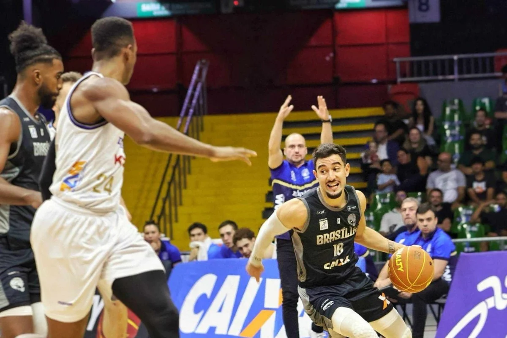

1. Estrutura atual e panorama da temporada 2024/25 na temporada atual do NBB, iniciada em 2024, conta com 18 equipes participando da disputa. Esta edição é considerada uma das mais equilibradas da história, com reforços em praticamente todos os times e presença de talentosacionais e internacionais, como o grego Rafail Lanaras, o espanhol Carlos Novas Mateo, e Luis Montero, além da volta de nomes conhecidos como Georginho de Paula, Alexey Borges e Reynan dos Santos

2. Regulação da janela de transferências Uma novidade importante nesta edição é a janela de transferências: qualquer jogador que tenha atuado por um time na atual temporada pode se transferir para outra equipe, desde que não tenha disputado mais de oito jogos e que a transferência ocorra antes do final do primeiro turno. Também é exigida uma carta liberatória do clube de origem, e cada atleta pode usar essa janela apenas uma vez lnb.com.br . Esse mecanismo visa garantir maior mobilidade e equilíbrio entre os clubes.
3. Contexto mais amplo e perspectivas futuras Além da mobilidade entre elencos, a temporada traz outras boas notícias: o NBB retomou o reconhecimento oficial da Confederação Brasileira de Basquete (CBB), com chancela da FIBA, o que permite a participação de seus clubes em competições internacionais como a Liga Sul‑Americana e a Champions League das Américas Rádio Itatiaia UOL . Essas mudanças reforçam o prestígio da liga e podem tornar a janela de transferências ainda mais relevante em temporadas futuras — à medida que clubes buscam se adaptar e se fortalecer.
elaborado por joao lucas